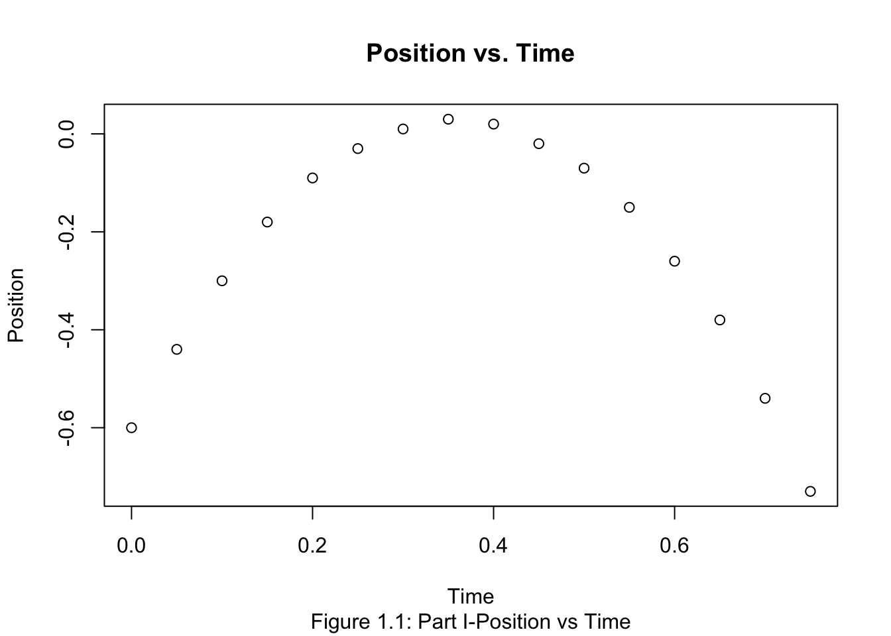
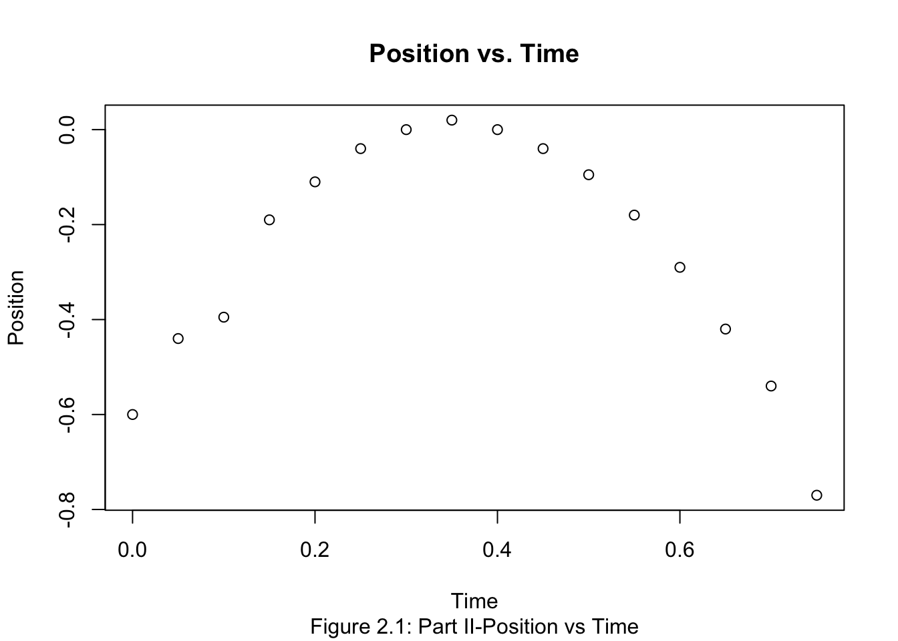
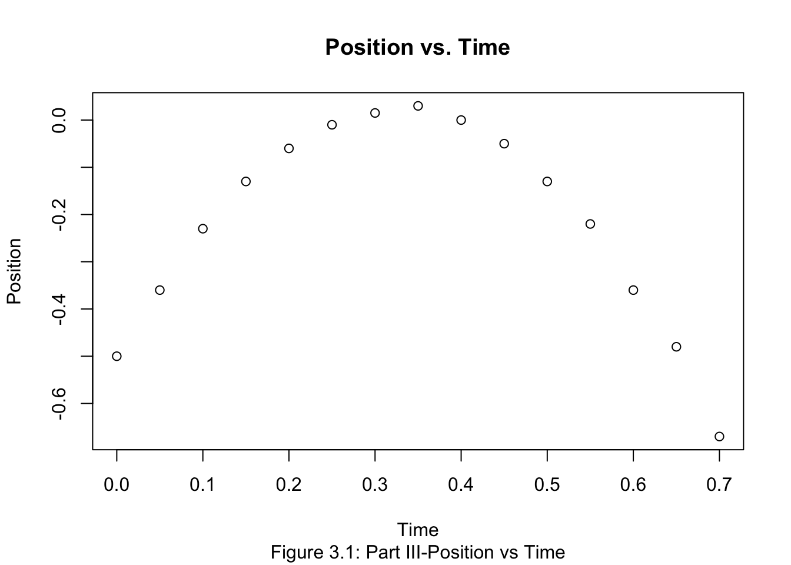
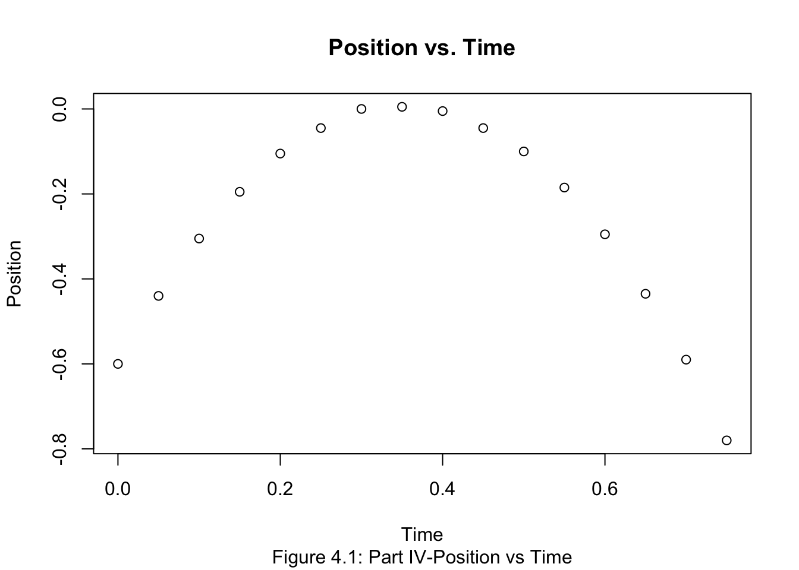
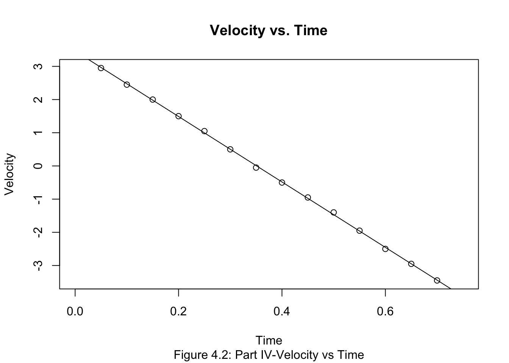
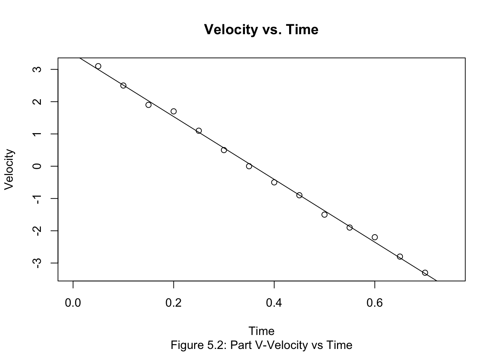

Chapter 4 Lab 3: Motion of Objects in Free Fall
4.1 Part I: Green Rubber Ball
\[m_1 = 80.8 \pm 0.1 g \] \[ d_1 = 6.75 \pm 0.01 cm \]
time <- seq(0,0.75, by=0.05)
Position<- c(-0.6, -0.44, -0.3, -0.18, -0.09, -0.03, 0.01, 0.03, 0.02, -0.02, -0.07, -0.15, -0.26, -0.38, -0.54, -0.73)
Velocity <- c(NA, 3, 2.6, 2.1, 1.5, 1, 0.6, 0.1, -0.5, -0.9, -1, -1.9, -2.3, -2.8, -3.5, NA)4.1.1 Part I: Data Table
## time Position Velocity
## 1 0.00 -0.60 NA
## 2 0.05 -0.44 3.0
## 3 0.10 -0.30 2.6
## 4 0.15 -0.18 2.1
## 5 0.20 -0.09 1.5
## 6 0.25 -0.03 1.0
## 7 0.30 0.01 0.6
## 8 0.35 0.03 0.1
## 9 0.40 0.02 -0.5
## 10 0.45 -0.02 -0.9
## 11 0.50 -0.07 -1.0
## 12 0.55 -0.15 -1.9
## 13 0.60 -0.26 -2.3
## 14 0.65 -0.38 -2.8
## 15 0.70 -0.54 -3.5
## 16 0.75 -0.73 NA
Estimate Std. Error t value Pr(>|t|)
(Intercept) 3.523077 0.07300707 48.25665 4.104652e-15
time -9.775824 0.17148492 -57.00690 5.602111e-16\[ v_o = 3.523 \pm 0.073 \frac{m}{s} \] \[ a = -9.776 \pm 0.171 \frac{m}{s^2} \]
4.2 Part II: Lead Ball
\[m_2= 92.4 \pm 0.1 g \] \[ d_2 = 2.5 \pm 0.01 cm \]
time <- seq(0,0.75, by=0.05)
Position<- c(-0.6, -0.44, -0.395, -0.19, -0.11, -0.04, 0.0, 0.02, 0.0, -0.04, -0.095, -0.18, -0.29, -0.42, -0.54, -0.77)
Velocity <- c(NA, 3.05, 2.5, 1.85, 1.5, 1.1, 0.6, 0.0, -0.6,-0.95, -1.4, -1.95, -2.4, -2.9, -3.5, NA)4.2.1 Part II: Data Table
## time Position Velocity
## 1 0.00 -0.600 NA
## 2 0.05 -0.440 3.05
## 3 0.10 -0.395 2.50
## 4 0.15 -0.190 1.85
## 5 0.20 -0.110 1.50
## 6 0.25 -0.040 1.10
## 7 0.30 0.000 0.60
## 8 0.35 0.020 0.00
## 9 0.40 0.000 -0.60
## 10 0.45 -0.040 -0.95
## 11 0.50 -0.095 -1.40
## 12 0.55 -0.180 -1.95
## 13 0.60 -0.290 -2.40
## 14 0.65 -0.420 -2.90
## 15 0.70 -0.540 -3.50
## 16 0.75 -0.770 NA
Estimate Std. Error t value Pr(>|t|)
(Intercept) 3.482418 0.04310229 80.79427 8.617652e-18
time -9.876923 0.10124213 -97.55744 8.999660e-19\[ v_o = 3.482 \pm 0.043 \frac{m}{s} \] \[ a = -9.877 \pm 0.101 \frac{m}{s^2} \]
4.3 Part III: Large Steel Ball
\[m_3 = 535.1 \pm 0.1 g \] \[ d_3 = 5.08 \pm 0.01 cm \]
time <- seq(0,0.7, by=0.05)
Position<- c(-0.5, -0.36, -0.23, -0.13, -0.06, -0.01, 0.015, 0.03, 0.0, -0.05, -0.13, -0.22, -0.36, -0.48, -0.67)
Velocity <- c(NA, 2.7, 2.3, 1.7, 1.2, 0.75, 0.4, -0.15, -0.8,-1.3, -1.7, -2.3, -2.6, -3.1,NA)4.3.1 Part III: Data Table
## time Position Velocity
## 1 0.00 -0.500 NA
## 2 0.05 -0.360 2.70
## 3 0.10 -0.230 2.30
## 4 0.15 -0.130 1.70
## 5 0.20 -0.060 1.20
## 6 0.25 -0.010 0.75
## 7 0.30 0.015 0.40
## 8 0.35 0.030 -0.15
## 9 0.40 0.000 -0.80
## 10 0.45 -0.050 -1.30
## 11 0.50 -0.130 -1.70
## 12 0.55 -0.220 -2.30
## 13 0.60 -0.360 -2.60
## 14 0.65 -0.480 -3.10
## 15 0.70 -0.670 NA
Estimate Std. Error t value Pr(>|t|)
(Intercept) 3.211538 0.04766507 67.37719 9.551433e-16
time -9.813187 0.12010468 -81.70528 1.149914e-16\[ v_o = 3.212 \pm 0.048 \frac{m}{s} \]
\[ a = -9.813 \pm 0.12 \frac{m}{s^2} \]
4.4 Part IV: Small Steel Ball
\[m_4 = 8.6.1 \pm 0.1 g \] \[ d_4 = 1.29 \pm 0.01 cm \]
time <- seq(0,0.75, by=0.05)
Position<- c(-0.6, -0.44, -0.305, -0.195, -0.105, -0.045, 0.0, 0.005, -0.005, -0.045, -0.1, -0.185, -0.295, -0.435, -0.59, -0.78)
Velocity <- c(NA, 2.95, 2.45, 2, 1.5, 1.05, 0.5, -0.05, -0.5,-0.95, -1.4, -1.95, -2.5, -2.95,-3.45,NA)4.4.1 Part IV: Data Table
## time Position Velocity
## 1 0.00 -0.600 NA
## 2 0.05 -0.440 2.95
## 3 0.10 -0.305 2.45
## 4 0.15 -0.195 2.00
## 5 0.20 -0.105 1.50
## 6 0.25 -0.045 1.05
## 7 0.30 0.000 0.50
## 8 0.35 0.005 -0.05
## 9 0.40 -0.005 -0.50
## 10 0.45 -0.045 -0.95
## 11 0.50 -0.100 -1.40
## 12 0.55 -0.185 -1.95
## 13 0.60 -0.295 -2.50
## 14 0.65 -0.435 -2.95
## 15 0.70 -0.590 -3.45
## 16 0.75 -0.780 NA

Estimate Std. Error t value Pr(>|t|)
(Intercept) 3.461538 0.02054240 168.5070 1.282215e-21
time -9.859341 0.04825164 -204.3317 1.269624e-22\[ v_o = 3.462 \pm 0.021 \frac{m}{s} \]
\[ a = -9.859 \pm 0.048 \frac{m}{s^2} \]
4.5 Part V: Styrofoam Ball
\[m_5 = 8.6.1 \pm 0.1 g \] \[ d_5 = 1.29 \pm 0.01 cm \]
time <- seq(0,0.75, by=0.05)
Position<- c(-0.6, -0.43, -0.29, -0.18, -0.10, -0.03, 0.01, 0.02, 0.01, -0.03, -0.08, -0.18, -0.27, -0.4,-0.55, -0.73)
Velocity <- c(NA, 3.1, 2.5, 1.9, 1.7, 1.1, 0.5, 0, -0.5,-0.9, -1.5, -1.9, -2.2, -2.8,-3.3,NA)4.5.1 Part V: Data Table
## time Position Velocity
## 1 0.00 -0.60 NA
## 2 0.05 -0.43 3.1
## 3 0.10 -0.29 2.5
## 4 0.15 -0.18 1.9
## 5 0.20 -0.10 1.7
## 6 0.25 -0.03 1.1
## 7 0.30 0.01 0.5
## 8 0.35 0.02 0.0
## 9 0.40 0.01 -0.5
## 10 0.45 -0.03 -0.9
## 11 0.50 -0.08 -1.5
## 12 0.55 -0.18 -1.9
## 13 0.60 -0.27 -2.2
## 14 0.65 -0.40 -2.8
## 15 0.70 -0.55 -3.3
## 16 0.75 -0.73 NA
Estimate Std. Error t value Pr(>|t|)
(Intercept) 3.483516 0.0552395 63.06205 1.674526e-16
time -9.727473 0.1297510 -74.97030 2.111388e-17\[ v_o = 3.484 \pm 0.055 \frac{m}{s} \]
\[ a = -9.727 \pm 0.13 \frac{m}{s^2} \]
g <- c(slope1, slope2, slope3, slope4, slope5)
gavg <- mean(g)
stdg <- sd(g)
dg <- round(stdg/sqrt(5),3)\[ g = -9.8104 \pm 0.027 \frac{m}{s^2} \]